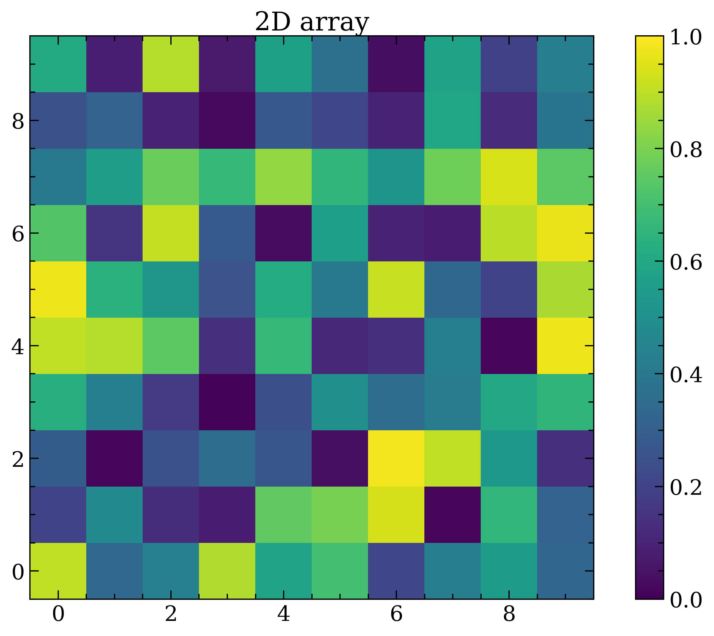
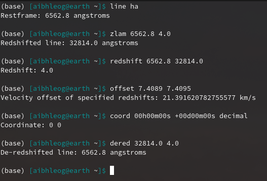
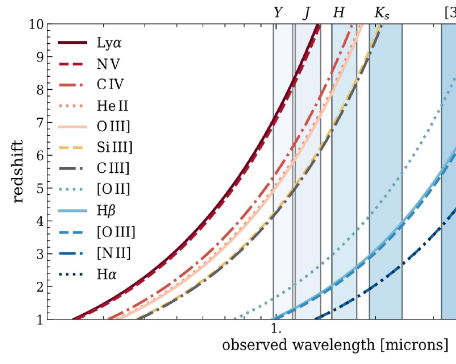
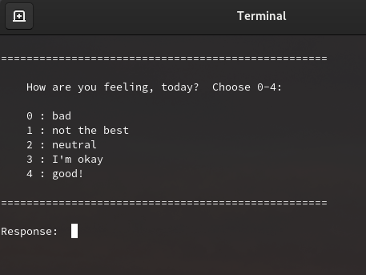
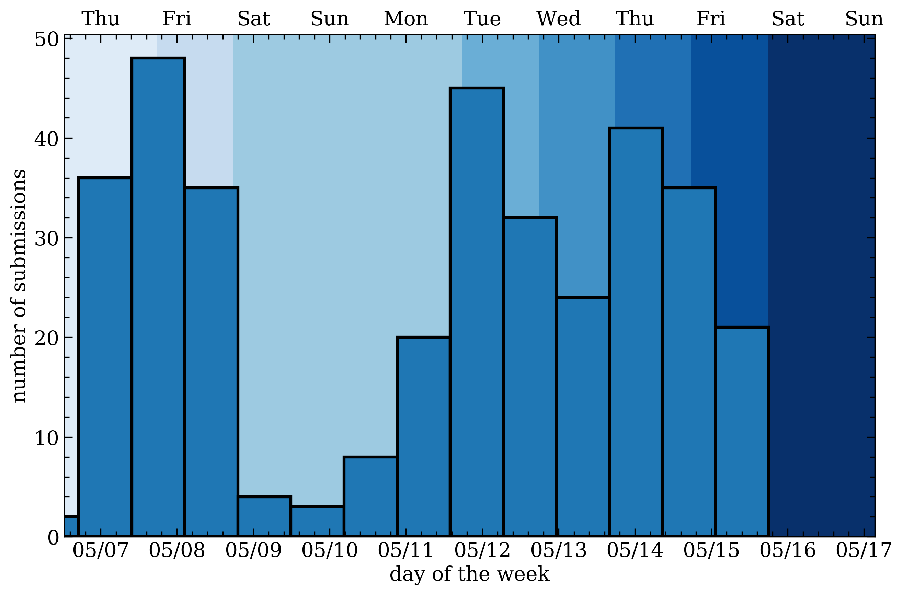
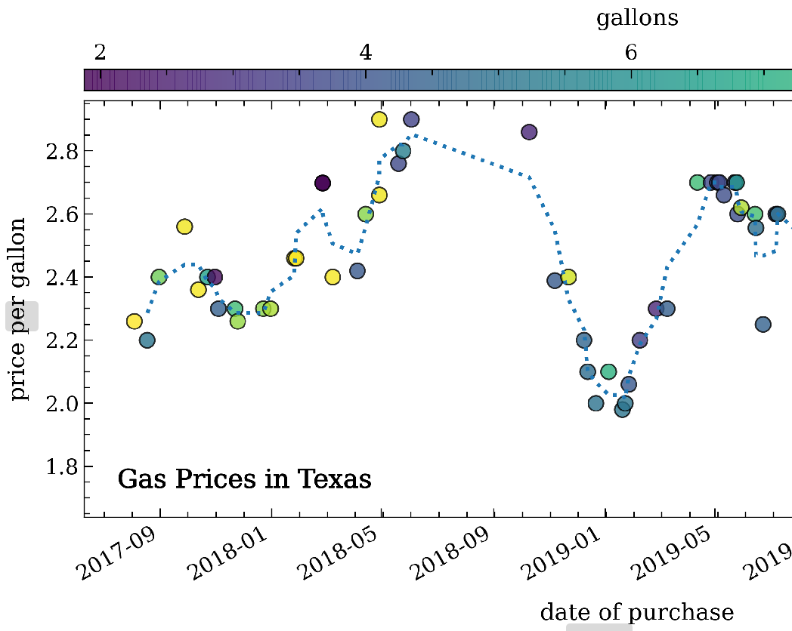
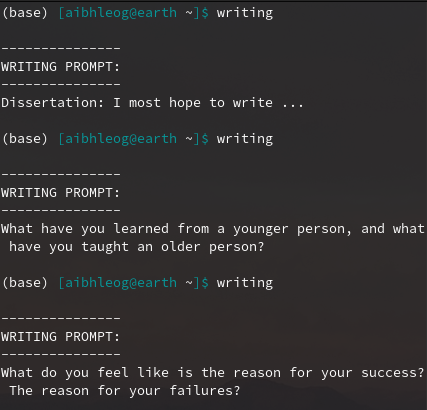

Making Fake Data & Why You Should
Believe it or not, this is a super useful skillset to keep in your toolbox — use it to explore a concept, learn how to use new software/coding package, test modeling code, and more!
I'm so grateful that I get to do this as part of my research. Aside from my science, one of my hobbies is to code up random things in my life that I've always been curious about -- some of them are useful for my research, such as the "Quick Tools for the Observational Astronomer," while others are purely a way for me to explore things and keep learning new ways to code. On this page I share a few projects I've messed around with over the past several years, as well as tips and tricks I've learned along the way.

First things first. These are some notes for anyone who is a curious coder, who likes exploring new code & packages like I do — some of these lessons I learned the hard way, so hopefully by sharing you can be spared some pain! Click on the bullet points below to expand them for more information.
Seriously. One of the first lessons I learned in graduate school (the hard way) was that you should ALWAYS inspect your data before doing anything with it. Make sure your FITS images open fine and don't look weird, learn what the column names are in your csv table and if there are any header rows that you'll need to tell your code to ignore, make sure that you understand how to access the information in the data you have, etc. It makes sense, right? You need to know what you're working with, need to know if there's anything wrong or anything broken. If someone shared the data with you, you need to know if there's anything you need clarification on don't understand sooner rather than later. Looking at the data first will save you so many headaches in the future. Truly.
TLDR: when writing code, it's a good idea to start with the smallest test case first — once you have a solid foundation and the code is doing what it should, ONLY THEN should be the time to start scaling up to your larger vision for the code This may seem obvious but when it comes to any big task, project, goal, etc., it's always best to start small and work in bite-sized chunks. Taking a big project and breaking it down into smaller and smaller parts ensures that you have a firm grasp of what you need to do, the steps you need to take, and a plan on how to do those steps. This is especially important when it comes to coding! Imagine you need to analyze a lot of spectroscopic data as part of your research. The code you need to write may include reading in various spectroscopy data files, exploring them, fitting the spectral emission features, and then plotting and printing all of the results. That's a big task and it can be easy to fall into the trap of trying to write all that code at once — especially if you've done some/all of those tasks before in other scenarios. However, that's the easiest way to create a series of small mistakes within your code that compound into large issues, incorrect calculations, or possibly the code just not working at all. Instead, if we were to start small and then scale up, it may look something like this:
TLDR: do some research FIRST and follow ethical best practices... before your IP gets blocked from a website because you accidentally DOS attacked it with your web scraping code. Web "scraping" or "crawling" describes using code of some kind to explore & extract information from a web page. This concept has existed for almost as long as the internet has, which has lead to many interesting conversations about the ethics of web scraping: how to do so respectfully, legally, and how to avoid accidentally overloading a website with requests. In 1994, early internet users and web-scraping robot developers created a set of rules and guidelines on how to operate on the web when using robots. This consensus has since been referred to as the Robot Exclusion Protocal (or "robots.txt") and is a common standard used by web developers, and can be found on most websites on the internet. The original page created by this group, outlining the protocal, can be found at robotstxt.org/orig. What is "robots.txt"? Essentially, this protocal recommends every website have a file on the server hosting the site, where the contents of this file describe everywhere on the site that the website owner does NOT want robots to scrape information. Everything in the "Disallow" section of a "robots.txt" file are places where no robot should visit. This doesn't mean that all robots will respect the parameters in "robots.txt", but most should at the very least. The most restrictive version of this file (that Disallows any access at all) looks like this:
User-agent: * # this applies to all robots
Disallow: / # all pages restricted, no robots allowed
Believe it or not, this is a super useful skillset to keep in your toolbox — use it to explore a concept, learn how to use new software/coding package, test modeling code, and more!


These are some of the quick tools I use while observing and writing proposals. Mostly they're scripts I've integrated into my .bashrc so I can run them from the terminal using keywords.
I think effective communication through visual media is SO important! This repository stores fun plots I've made for papers, various presentations, and/or outreach programs that others may find fun or useful.
I also include my personal matplotlibrc file!


This is just a small script which, when paired with .bashrc, asks you each day to rank how you're feeling and logs it. This code will only prompt you the first time you open your terminal that day.
Some code I'm writing to pursue a theory about arXiv, uses the python package selenium to access web browsers and collect data. Ran it daily until one of the sites retired & stopped pulling arXiv postings. Now in analysis.


I purchased my car after my first year of grad school. Since then, while I lived in Texas I logged all of my gas receipts to see how the price per gallon changes. Now that I've moved to Maryland, I'v also folded in a new tracking set for this state, instead!
In grad school, after a writing workshop that a colleague and I attended, I had wanted to make a list of writing prompts to help me overcome my scientific writers block. Using some of the prompts that were given at that workshop and then scouring the internet for more examples, I compiled a list and wrote a quick script to randomly print one. Integrating this script as an alias in my terminal means that I can type "writing" in my terminal and get a prompt!
